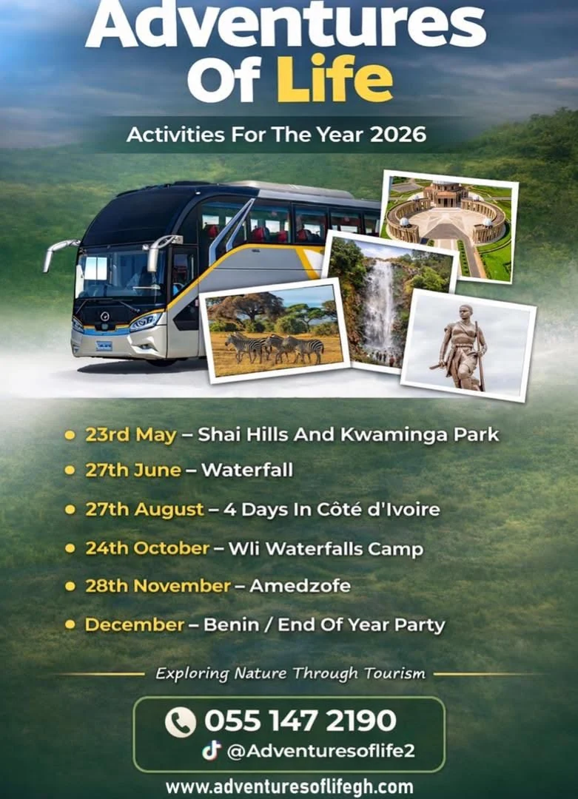

31 January
Nkyinkyim Museum & Ada Island Done
The year opened with story, shoreline, and a soft first chapter that already felt like a full day worth remembering.
Museum + island day
This journal turns the full Adventures of Life GH lineup into one clear story: what has already happened, what is coming next, and how the rest of the year unfolds. Instead of scattered trip posters, you can read the route from top to bottom and decide where you want to join.
Want proof before you pick a chapter? Read real trip reviews
Eight chapters already pinned to the page. The first two have happened. The rest of the year is still sitting here like a journal somebody filled in before the movement began.
The year opened with story, shoreline, and a soft first chapter that already felt like a full day worth remembering.
Museum + island day
The first passport stamp came early. Three days over the line, a different rhythm, and a bigger sense of where the year could go.
3-day border run
Back on home ground, the road turns toward reserve terrain, open space, and the kind of stop that resets the whole page.
Park terrainA water reset after the early movement, giving the year one quiet breath before it stretches west again.
Water chapter
The second border run, four days west, and the point where the wall map stops feeling local.
4-day crossingBack into Ghana for the camp chapter, where the road trades border motion for Volta air and long-night energy.
Highland campThe highlands close the home run, carrying the year right up to the edge of the finale.
Volta highlandsThe finale. One last border run, one last stamp, and the kind of ending that makes the next year start talking to you.
End of year"The page should already feel alive before the middle of the year. Start with culture, cross the border early, come back home stronger, then close with a finale people plan around."
— Zico · Founder
Ada opens the journal with story and shoreline. Togo stamps the passport before the year even settles.
Shai and Oboadaka Waterfall reset the body. Côte d’Ivoire widens the frame and turns the journal outward again.
Wli Waterfalls Camp and Amedzofe carry the home stretch. Benin gives the year its last loud page.
Ready to get on the right list?
If a chapter already feels like yours, send the inquiry now. If you want proof before you book, read what past travellers said after the road was over.